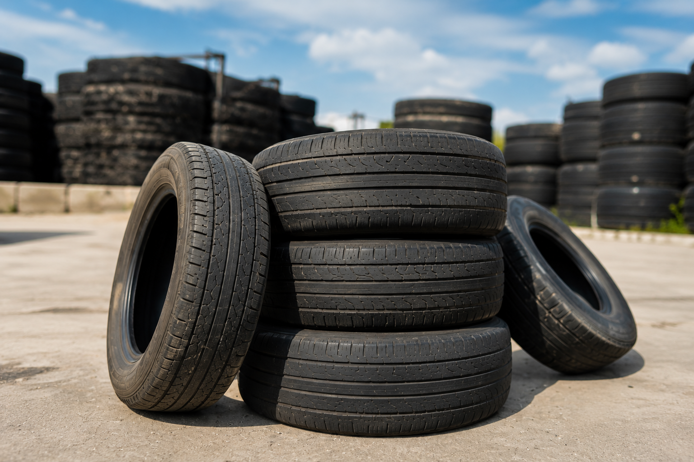
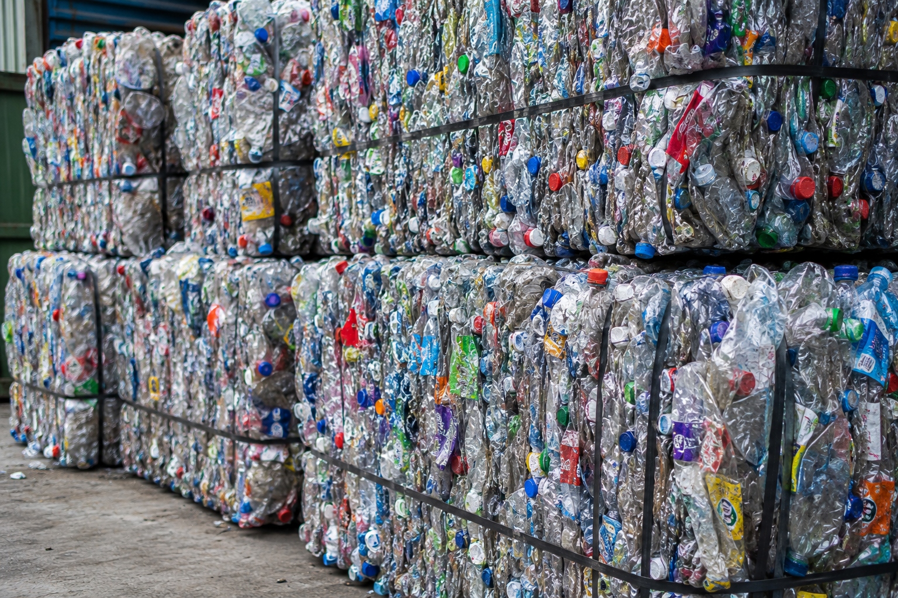

Group Capital Regis
Global Industry. Sustainable Future
Environmental Responsibility and Sustainability
At Regis, environmental responsibility is an essential pillar of our corporate philosophy. We believe that industrial development must be aligned with the protection of the environment and the sustainable use of natural resources. Our activities are guided by long-term environmental objectives, regulatory compliance, and a strong commitment to future generations.
Recycling as a Strategic Priority
Recycling plays a critical role in reducing environmental impact and preserving finite natural resources. Regis places particular emphasis on the responsible recovery and management of recyclable materials, especially metals, which represent a significant opportunity to reduce landfill use and limit unnecessary extraction of raw materials.
Through structured and controlled recycling processes, we actively contribute to the promotion of the circular economy, ensuring that materials are reintegrated into industrial value chains in a safe, efficient, and environmentally responsible manner.

Tire Recycling
We transform end-of-life tires into valuable recycled materials through efficient and sustainable processes. Our tire recycling solutions help reduce environmental impact, minimize landfill waste, and support the circular economy.
From collection and sorting to shredding and processing, we give used tires a second life by converting them into reusable rubber materials for industrial and commercial applications.
We are committed to responsible waste management, innovation, and creating cleaner, more sustainable communities for the future.

Plastic Recycling
Our plastic recycling operations focus on recovering and reprocessing plastic waste into reusable raw materials. By recycling plastic bottles, packaging, and industrial plastics, we help reduce pollution and promote sustainable resource management.
Using advanced sorting and processing methods, we transform discarded plastics into high-quality recycled materials ready for new manufacturing uses.
Our mission is to support a cleaner environment while delivering reliable and environmentally responsible recycling solutions worldwide.
Industrial Facilities and Operational Capacity
Regis operates an industrial plant dedicated to the storage, handling, processing, and transformation of recyclable materials. Our facilities are designed to meet industrial and environmental standards, enabling the safe management of materials and the optimization of recycling processes.
This infrastructure allows Regis to:
- Ensure traceability and control throughout the recycling cycle
- Optimize material recovery and resource efficiency
- Reduce environmental and operational risks
- Maintain compliance with applicable environmental regulations
Our industrial capacity is a key element in delivering reliable and scalable recycling solutions.
Commitment to a Clean and Green Planet
Regis actively contributes to the preservation of a clean and green planet by minimizing waste, reducing environmental pollution, and supporting sustainable industrial practices. Our operations are designed to limit ecological impact while maximizing positive environmental outcomes through responsible material management.
We recognize the importance of balancing economic activity with environmental stewardship and continuously work to improve our processes in line with sustainability objectives.
Protection of Marine Environments
Marine ecosystems are particularly vulnerable to industrial and metal waste. Regis is committed to supporting initiatives aimed at the collection, removal, and proper treatment of metallic and industrial residues that threaten oceans and coastal environments.
By promoting responsible waste management practices, we contribute to the protection of marine biodiversity and the long-term health of seas and coastlines.
International Cooperation and Support to Third Countries
Regis engages in international cooperation projects with third countries to support the collection and management of recyclable materials. Through the provision of industrial expertise, technical knowledge, and infrastructure support, we assist in improving waste management systems and environmental conditions in regions where such resources are limited.
These initiatives also contribute to:
- Environmental improvement
- Economic development
- Job creation and skills transfer
- Strengthening local recycling frameworks
Long-Term Vision
Regis combines industrial capability, environmental responsibility, and international cooperation to deliver sustainable and responsible solutions. Our long-term vision is to contribute to a global recycling model that supports environmental protection, economic efficiency, and social development.
Contact Us
Telephone
Recycling Identification
Recycling identification number 10902